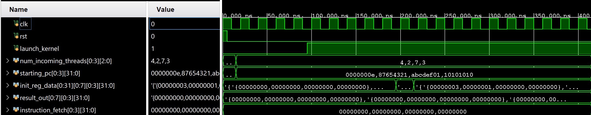
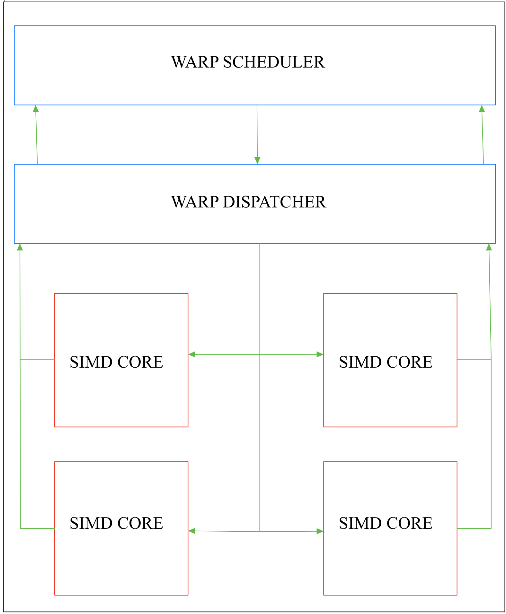
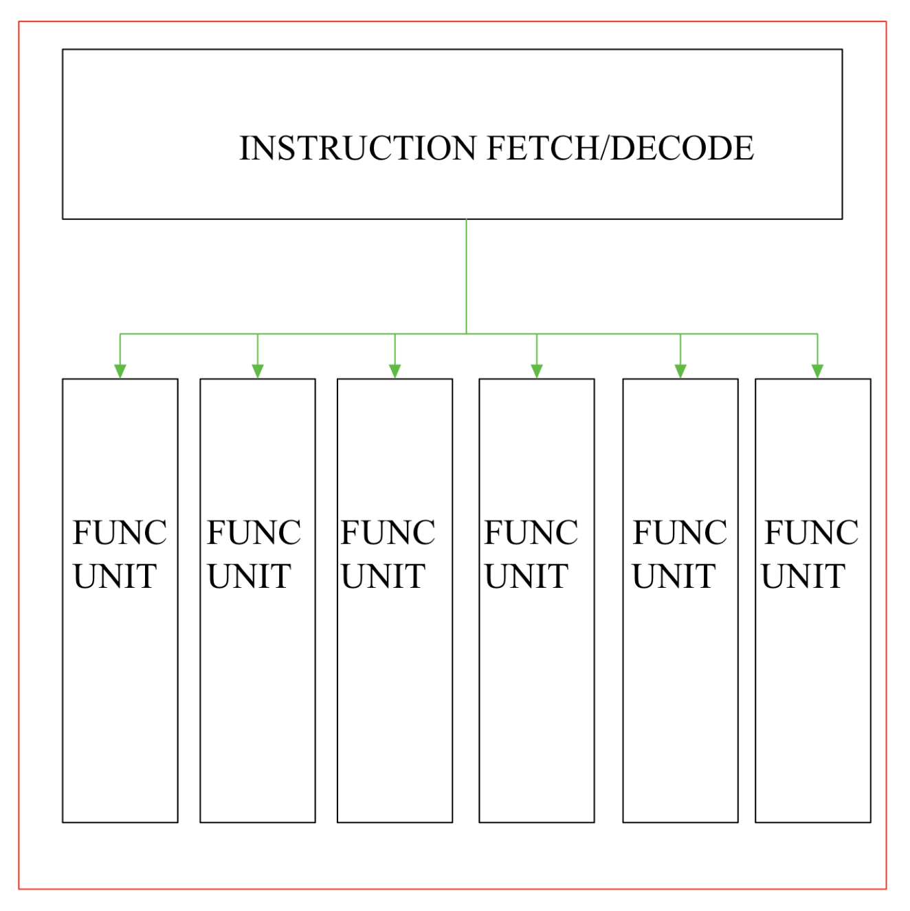

Due to my desire to learn more about GPU architecture, I designed and validated a small scale GPU in SystemVerilog. Using Xilinx Vivado, I was able to implement the GPU's functionality, including integer and floating point arithmetic. All of this was done with the goal of gaining a deeper understanding of GPU design and familiarity with Xilinx Vivado.
A high level schematic of the GPU architecture is shown below. The GPU is designed to be completely scalable, meaning that depending on the specific use case (size and power of FPGA), the number of cores and functional units can be adjusted. The GPU is designed to execute LEGv8 instructions, with one additional instruction for ease of execution.

In general, this is the general flow of data through the GPU: The CPU would send data any number of threads that it needs completed to the GPU. This data would hit the warp scheduler where information such as starting pc, thread count, and an identification number are stored. When the CPU is ready, it sends a "launch kernel" signal, which tells the GPU to begin executing a task. It sends the kernel to the warp dispatcher, which will locate an unused SIMD core and send the kernel to it. This will begin a fetch decode execute cycle until the return instruction is hit. Then, the completed identification number are sent back to previous modules so all hardware can be recycled. More detailed information about each module is below, as well as a schematic of each SIMD core.

Warp Scheduler: This is the first module that data from the CPU hits. It stores multiple threads (mostly referred to as a warp) in a circular buffer in hardware. Information is stored in a kernel_t struct, where the starting PC, thread count, and an identification number are kept. The module can be in one of three states: idle, launching_kernel, or loading_kernel. If the CPU has sent data that is not already in the circular buffer, the module will enter the loading_kernel state, where it will store the data in the next available space. As soon as the CPU sends a launch_kernel signal, the module enters the launching_kernel state, where it will output the first kernel in the buffer. If there is nothing else for the module to do, it will enter the idle state.
Warp Dispatcher: This module receives the kernel that the warp scheduler sends out. As soon as it receives a kernel, it will locate an unused SIMD core and send the kernel to it. It does this by keeping track of which cores are busy and which are free. When a core finishes executing a kernel, it sends its identification number back to the warp dispatcher, which marks that core as free.
SIMD Core: This module (shown on the left) is where the actual execution of instructions happens. First, it finds fetches an instruction from memory using the starting PC that the warp dispatcher sent it (Because there is no established cache or memory, I send data in through the testbench). The instruction is then decoded, and the important information is send to each functional unit. Because each unit has its own register file, multiple different operations can be completed at once. After the instruction is executed, the PC is updated and the next instruction is fetched.
Functional Unit: This module contains custom floating point and integer ALUs. Both of these use no arithmetic operators, instead relying only on logical operations. This was done to get a deeper understanding of the actual hardware implementation of these operations, and to fully understand how floating point arithmetic works. Other operations, such as multiplication and division, currently use SystemVerilog's built in operators.
Overall, this project was a great learning experience. As it was my first large scale personal project, I encountered many challenges along the way. Fully designing and implementing a GPU is no small task, and architecting it by myself was difficult. However, I learned a lot about what it means to design hardware, and I gained valuable experience analyzing other implementations and chosing what worked best for my design. I also gained experience with Xilinx Vivado, giving me insight into what kinds of tools are used in industry. Furthermore, it was a great way to familiarize myself with SystemVerilog, as I only had project experience with VHDL before starting this project. The experience with SystemVerilog's features was invaluable, and I look forward to using it in future projects.